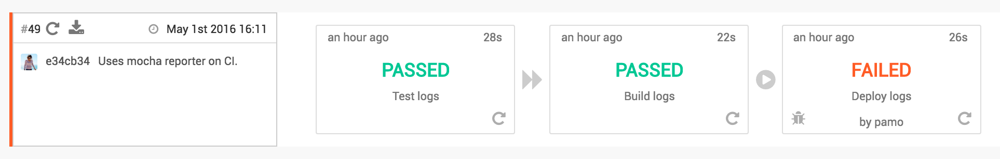

likes coffee
Automated SnapCI Deploys with Github Pages
I’m currently contributing to Fun Retrospectives on the “Front-End Ops” front.
One thing that was bugging me before was that we were commiting our dist/ directory or build artifacts on both the master and gh-pages branch.
New contributors were not sure if these things needed to be ignored or part of their commits.
I don’t use any 3rd party hosting service to deploy this blog. It’s all Github Pages. Github pages are helpful if what you’re trying to serve is static. In the case of my blog, I use GatsbyJS to process markdown into HTML. Static site generators are all the rage, and I went with Gatsby because of React (#HipsterJS).
One thing I spent some time on when I set it up was keeping my deployment clean by separating my source code from my static files.
For Github personal pages the static files are always served from the master branch and project pages are served from gh-pages.
With a tool like gh-pages it’s simple to target what should be served statically (and coincidentally gitignored).
Deployment from a local machine is easy as well. Your Github account should already have SSH Keys configured and deploys (or pushes) are a breeze.
However, when you want a suite of testing and linting to happen beforehand on a CI pipeline, there’s some additional configuration that needs to happen.
 Wait for it…
> Fireideaz@0.0.1 deploy /var/snap-ci/repo
> ./deploy.sh
Deploying changes from e34cb34 Pamela Ocampo Uses mocha reporter on CI.
Cloning git@github.com:funretro/distributed.git into node_modules/gh-pages/.cache
Cloning into 'node_modules/gh-pages/.cache'...
Warning: Permanently added 'github.com,192.30.252.131' (RSA) to the list of known hosts.
Permission denied (publickey).
fatal: Could not read from remote repository.
Please make sure you have the correct access rights
and the repository exists.
Oops. Access denied on the Fun Retrospectives Build. I did some Googling and Snap’s Deploying documentation looked a little slim for my case. I found something similar on how to publish to gh-pages with TravisCI but the number of steps made me feel I might want to open an issue for another day.
I continued digging anyway. Snap’s page on adding SSH Keys to a step got me going in the right direction and the Deploy Keys pane and documentation on Github seemed to indicate that this would be a… snap.
It was. I chose to generate a new key and save it to a temporary location on my machine.
ssh-keygen -t rsa -b 4096 -C "team@funretro.io"
Enter a file in which to save the key (/Users/you/.ssh/id_rsa): /Users/pamo/Downloads/key
I copied the contents of the generated key.pub to the Deploys Key pane on our
funretros repository settings and the contents of the generated key (private file) to the deploy step in our build.
> Fireideaz@0.0.1 deploy /var/snap-ci/repo
> ./deploy.sh
Deploying changes from e34cb34 Pamela Ocampo Uses mocha reporter on CI.
Cloning git@github.com:funretro/distributed.git into node_modules/gh-pages/.cache
Cleaning
Fetching origin
Checking out origin/gh-pages
Removing files
Copying files
Adding all
Committing
Pushing
Published
Command npm run deploy exited successfully with status 0. Took 19.1 seconds.$ if [ -d /var/snap-ci/repo/node_modules ]; then mv -f /var/snap-ci/repo/node_modules /var/go; fi # cache the node_modules for the subsequent builds
Command if [ -d /var/snap-ci/repo/node_modules ]; then mv -f /var/snap-ci/repo/node_modules /var/go; fi # cache the node_modules for the subsequent builds exited successfully with status 0. Took 19.11 seconds.Removed file $HOME/.ssh/id_rsa
Saving console log for later
Success!
If you’re curious to see how I used gh-pages to deploy to specific branches and repositories, have a look at the deploy script for Fun Retrospectives and the one for this blog.
#!/bin/sh
LAST_COMMIT=$(git log -1 --pretty=format:'%h %an %s')
echo "Deploying changes from $LAST_COMMIT"
gh-pages -r git@github.com:funretro/distributed.git -d dist -m "Updates from $LAST_COMMIT"
READ THIS NEXT:
Desarrollando en Chile
My latest ThoughtWorks adventure has taken me to Santiago, Chile. ¡Yay! ¡Soy desarrolladora! 💃 I’ve always wanted to be working in my native tongue and I’m having an interesting time finding my way...